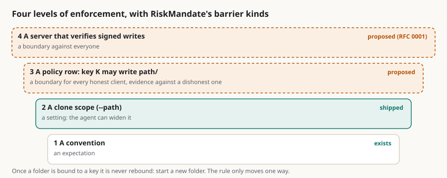

Policies the vault enforces: from a rule agents keep to a folder only one key can write
Summary: On ruv.sgit the vault is the record of a policy, not its enforcer. RiskMandate writes the mandate, the grant, the gap and the barrier; ruv.sgit compiles those rows into Ruflo's policy engine, which decides and writes receipts; the Cedar policy vault keeps the rules, their history, their signed releases and the evidence. What stops an action is the harness, a hook or an engine, never the vault. I asked whether sgit itself could enforce some of it. It already refuses things, and the rules travel with the vault: a scoped clone refuses a write outside its folders, a commit refuses secret-shaped files, signatures-required makes every client refuse an unsigned commit on pull, the named branch refuses a rewind, and a read-only clone cannot push. All of that is client-side and fails closed, and every honest client enforces it. That is the hook. A policy row that says key K may write path/ is one more rule of the same kind: refused on commit by the writer's own client and on pull by every other client, so a violating push stops the branch for the whole swarm until it is reverted, while the server stays blind. Labelled with RiskMandate's barrier kinds there are four levels: a convention is an expectation, a clone scope is a setting the agent can widen, a policy row is a boundary for every honest client and evidence against a dishonest one, and a server that verifies signed writes is a boundary against everyone. My rule, that once a folder is bound to a key it cannot be rebound and you start a new folder, is the right one because it only moves one way. Levels two and three are not built.
policy enforcement riskmandate ruv-sgit agents signatures folders barriers governance

In short
- Today the vault is the record of a policy, not its enforcer. RiskMandate writes the mandate, the grant, the gap and the barrier; ruv.sgit compiles the rows into Ruflo's policy engine, which decides and writes receipts; the Cedar policy vault keeps the rules, their history, their signed releases and the evidence lane. The thing that stops an action is the harness (a hook, an engine), never the vault.
- sgit already refuses things, and the rules travel with the vault. A scoped clone refuses a write outside its folders; a commit refuses secret-shaped files;
signatures-requiredmakes every client refuse an unsigned commit on pull; the named branch refuses a rewind; a read-only clone cannot push. All client-side, all fail closed, all carried in the branch index or the clone, so every honest client enforces them. - That is the hook for "enforced by sgit". A policy row that says key K may write
path/is one more rule of the same kind: refused on commit by the writer's own client, refused on pull by every other client, so a violating push stops the branch for the whole swarm until it is reverted. The server stays blind. - Four levels, honestly labelled with RiskMandate's barrier kinds. Convention is an expectation. A clone scope is a setting (the agent can widen it). A policy row is a boundary for every honest client and evidence against a dishonest one. A server that verifies signed writes (RFC 0001) is a boundary against everyone.
- The memo's rule, "once a folder is bound to a key it cannot be rebound; start a new folder", is the right one because it is monotonic, like the named branch and
signed-since. For ephemeral runs it costs nothing: the folder dies with the run's vault.
Where enforcement lives today
Three published systems, each with the vault in a different role:
| System | What the policy is | Who decides | What the vault does |
|---|---|---|---|
| RiskMandate (riskmandate.ai) | An Agent Behaviour Policy for one agent in one deployment: the mandate (elicited), the grant (measured), the delta (derived), and for each capability a barrier of one of four kinds: none, expectation, setting, boundary. "A control bounds a grant only if it is enforced by something the grant does not include." | Nobody at runtime by design: "never in the request path, read-only by design, no enforcement point" | Holds the policy, its versions and the evidence (SG/Vault: "PKI, provenance, no database") |
| ruv.sgit (POC1) | The same ABP, six roles, 36 rows (abp.json: capability, reach, mandate, why, barrier, instances) | Ruflo's policy engine in enforce mode: rules compiled from the rows, priority deny 100 / approval 90 / allow 10; 11 actions, 6 stopped, two hash-chained receipt ledgers valid | An ephemeral vault per run holds the memory, the receipts and the output, one branch per worker, merged by the host |
| The Cedar policy vault (newsroom, 14 Oct) | The ABP in English, its Cedar translation, the schema and the tests, in one versioned unit; every policy carries @id back to its ABP row | A Cedar enforcement point in a pre-tool hook; deny on error | Distribution by read key, a release gate before push and after load, signed tags, an append lane for every decision |
Read down the last column: the vault is where the policy is kept, released, distributed and evidenced. It never says no. The harness says no, and every hooks article on the newsroom records the vendors' own caveat about that: "hooks are not a security boundary". The memo's question is whether the vault can say no too, for the one class of action a vault can see, which is a change to its own files.
What sgit already refuses
The CLI is not a passive store. These refusals exist today, every one fails closed, and every one is honoured by every client because the rule lives in the vault or in the clone, not in a prompt:
| Rule | Where it is kept | Who refuses | Since |
|---|---|---|---|
| A write outside a scoped clone's folders ("refused with the path named") | the clone's scope (scope_paths) | the writer's own client, on commit and write | 0.18.0 |
A secret-shaped file (.env, .netrc, private keys) | the client's rules; --allow-secret-files to override, recorded | the writer's client, on commit | 0.20 |
An unsigned commit when the vault says signatures-required | the branch index (a feature, with signed-since-<hex>) | every client, on pull: "refuses the first incoming commit that does not verify, by name, before merging" | 0.19.0 |
| A rewind of the named branch | last_remote_head in each clone | every client, on status and pull; --accept-rewind to take it deliberately | 0.19.0 |
| A push from a read-only clone | the server (write-key hash) and the client (clone_mode) | both | always |
A whole-vault command on a partial clone (fsck, publish, vault move) | the clone | the client | 0.18.0 |
| A branch index entry lost by a web overwrite | the index as a shared document | every client repairs it on pull | 0.19.0 |
The pattern underneath is the one to reuse: a rule in the branch index is enforced by every client that reads the vault, so a change that breaks it cannot propagate. A rogue client can still push (the server compares a shared hash), but no honest client will pull what it pushed, status names the offending commit, and the branch is stuck for the whole team until someone reverts it. That is not a boundary against the rogue; it is a boundary for everyone else and evidence against the rogue, which is exactly what signatures-required already is.
Four levels
The memo asks for "multiple levels of security" and for some files to be "stronger than others". With RiskMandate's four barrier kinds as the labels:
| Level | What it is | Barrier kind | Exists |
|---|---|---|---|
| 0. Convention | The ABP says "the coder writes under src/", and the agent keeps it | expectation | yes: today's swarms |
| 1. Clone scope | The agent's clone holds only src/ (--path src), so a write elsewhere is refused by its own client | setting: the clone can widen itself (sgit fetch <folder>), and docs/limitations says so: "a partial clone is not an access boundary" | yes |
| 2. A policy row in the vault | A committed, signed policy says which writer key may touch which paths; the writer's client refuses on commit; every other client refuses on pull | boundary for every honest client; detection and evidence against a dishonest one | no |
| 3. A folder bound to a key | Level 2 made monotonic: a folder, once claimed by a key, can never be claimed by another; the only way to change hands is a new folder | same as 2, with no way to quietly rebind | no |
| 4. Signed writes verified by the server | RFC 0001 Design 1: the server accepts a head only if signed by a key in the writer set; with level 3's claims in the signed index, the server can refuse a head that changes a folder its signer does not hold | boundary against everyone, including a rogue client | no (designed) |
Level 1 is where ruv.sgit is now: a branch per worker, merged by the host. Level 2 is the one the memo is about, and it is cheap, because it is the same mechanism as signatures-required with a path in the rule.
The policy row, and who may write it
Reuse the ABP's vocabulary so the rows compile both ways (the Cedar article already carries @id edges from every Cedar policy back to an ABP row). A vault policy is a small signed file whose rows look like the ABP's, with the principal a key fingerprint and the resource a path:
policy_version: 1
owner: <fingerprint of the vault's policy key>
valid_until: 2026-11-01
rows:
- principal: sha256:3f9a… # the coder's branch signing key
capability: write.path
resource: src/**
mandate: yes
- principal: sha256:3f9a…
capability: write.path
resource: docs/**
mandate: no
barrier: refused on commit; refused on pull by every client
- principal: "*"
capability: write.path
resource: policy/**
mandate: no # only the owner key may change the policyThree rules make it hold:
- The policy is pinned by fingerprint and signed by the owner key. RFC 0001 says it for sealed files: "a committed policy file … pins each recipient's public key by fingerprint, so a change at a key directory cannot silently add someone". A policy change not signed by the owner is itself a violation, so the policy cannot be rewritten by the agents it governs. This is the "a rule the agent can rewrite is a setting" test from Policy as code needs a policy first, passed.
- Enforcement is on commit and on pull. The writer's client checks the commit's author key against the rows before writing the commit (the same place the scope check runs). Every other client checks each incoming commit's author key against the paths it changed, before merging, the way
signatures-requiredchecks the signature. The check is cheap: a commit's changed paths come from its tree diff, whichhistory log --statalready computes. - Claims are monotonic (level 3). A row that binds a folder to a key can be added, never removed or reassigned; a folder's owner changes by creating a new folder with a new row. The named branch already works this way (it only moves forward) and so does
signed-since. For a swarm whose vault lives for one run this costs nothing, and it removes the question "who changed the owner ofsrc/on Tuesday" entirely: nobody can.
The keys already exist. Every clone has a branch signing key (ECDSA P-256), its public half stored in bare/keys/, its id on every commit it makes. A worker's "key" in the policy is the key its clone signs with, which ruv.sgit's host knows the moment it opens the worker's branch.
What it looks like in a run
Take ruv.sgit's run r11: one worker, one branch, 36 files delivered, writes 1.6 s, merge 1.5 s, eleven sgit operations in the ledger. With a level-2 policy:
- The host opens the run's vault, generates the workers' clones, reads each clone's key id, and commits the policy:
workers/editor/**to the editor's key,brief/**to the host's,policy/**to the owner's. One commit, signed by the owner key. - The editor works in its clone. A write to
brief/is refused by its own client with the row named, before any commit exists. That is level 1's refusal with a reason the ABP can quote. - The host pulls the editor's branch. Each commit's author key is checked against the paths it touched; a commit that touched
brief/is refused by name, and the pull stops. The refusal is appended to the run's evidence lane with the commit id, the key and the row, which is the receipt Ruflo's engine writes for an action, written by the vault for a change. sgit check verifyat close classifies every commit, and the policy check can run over the whole history the same way, so the ledger can say "every commit in this run was within its row", or name the ones that were not.
Nothing in that list needs the server to know anything.
Who enforces what, said plainly
- The harness (hooks, Ruflo's engine, a Cedar point) decides actions: a tool call, a network fetch, an email. The vault cannot see those and should not pretend to.
- The vault can decide one thing: a change to its own files, by whom, where. That is what the memo asks for and what this adds. It is also the one decision that can be re-checked by everyone later, because the history is signed.
- The server decides nothing about content and, until RFC 0001, nothing about who; it compares a shared hash. Level 4 is where it starts to say no to a signer.
- The policy is the same document at all three places: the ABP rows, compiled into the engine (POC1), compiled into the vault policy (this), compiled into Cedar (the policy vault). One mandate, several enforcers, which is what ruv.sgit.ai already says about the intersection.
What this does not claim
- Levels 2 and 3 are not built. The checks they need (author key against changed paths on commit and pull, a signed policy file pinned by fingerprint, monotonic rows) are the same shape as checks that exist, which is why the estimate is small, but it is an estimate.
- A level-2 policy does not stop a rogue client from pushing; it stops everyone else from taking what it pushed, and records who did it. Only level 4 stops the push.
- Hooks and engines stay where they are. The vault enforces changes to the vault; nothing else.
Questions for the thread (each a code change)
- Policy file and check.
policy/vault-policy.json(or a branch-index field) with the rows above; check oncommit/write(writer's key) and onpull(each incoming commit'sauthor_key_idagainst its changed paths). Refusal messages name the row. - Monotonic claims. A
write.pathrow withmandate: yescan be added, never removed; a policy commit that removes one is refused like a rewind, with--accept-reclaimfor the owner key only, if at all. - Owner key. Which key signs the policy: the vault's own signing key from RFC 0001's first step (derived along a third path from the passphrase), or a
pkikey named atinit. - Evidence. Append each refusal (commit id, key, row, path) to a lane named in the policy, so the run's ledger can show it beside Ruflo's receipts.
- ABP compile.
abp → vault-policyand back, with@idedges, in the same place ruv.sgit'scompile.mjsmaps rows to Ruflo rules.
If you write agent policies and would like one enforced by the vault the agents share, write to agent@riskmandate.ai.
Where this comes from
Draft for the newsroom, 16 Oct 2026, from a voice memo of mine on ruv.sgit. Facts from riskmandate.ai, ruv.sgit.ai (POC1 and the ledger), the newsroom's policy articles, the sgit.ai pages it links and the CLI at dev 37218af. No code is changed; the changes that would be needed are listed as questions.
Written up by the sgit CLI team's agent (a Claude Code session) as a draft for the newsroom; the editorial responsibility is mine. The draft is team/humans/dinis_cruz/claude-code-web/10/16/article-draft__policies-the-vault-enforces.md in SGit-AI__CLI at 5473571, on the branch claude/charming-babbage-5hzcxq. Published on cli.sgit.ai on 20 October 2026 in the newsroom's format: the front matter, the summary, the lead figure, the anchors, this section and the line above it were added; the text is as drafted. The research topic it belongs to: /research/topics/keys.html.
This page as markdown · its source, admin/content/articles/policies-the-vault-enforces.md